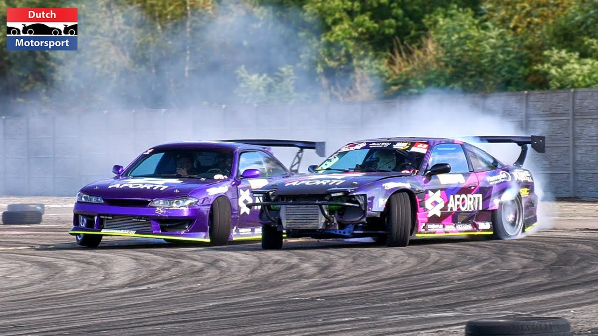

Co to drift
Drift to technika jazdy samochodem, w której kierowca kontroluje pojazd w sposób, który powoduje utratę przyczepności kół tylnych i wprowadza go w kontrolowany poślizg boczny. W praktyce oznacza to prowadzenie samochodu przez zakręty w sposób, w którym tylne koła tracą przyczepność, a pojazd "driftuje" bokiem.Podczas driftu kierowca świadomie przekręca kierownicę, reguluje pedał gazu i hamulca oraz przenosi ciężar pojazdu, aby utrzymać kontrolowany poślizg. Driftowanie wymaga dużej precyzji, refleksów i umiejętności od kierowcy, aby utrzymać pojazd pod kontrolą i zapobiec postronnym zdarzeniom.Drifting jest popularnym sportem motoryzacyjnym oraz formą ekspresji w kulturze samochodowej. Zawody driftu odbywają się na specjalnie przygotowanych torach, gdzie kierowcy oceniani są pod względem umiejętności technicznych, stylu i kreatywności podczas prowadzenia pojazdu w poślizgu.
Porównanie:
- Mazda RX-7 (FD3S) - Ten sportowy samochód z silnikiem Wankla o nazwie "Rotary" jest jednym z najbardziej ikonicznych modeli RX-7. Dzięki swojej lekkości, doskonałemu rozkładowi masy i możliwościom modyfikacji, RX-7 FD3S stała się popularnym wyborem w społeczności driftowej. Dynamiczna jazda i charakterystyczny dźwięk silnika Rotary czynią ten samochód niezapomnianym.
- Nissan 180SX/200SX/240SX (S13) - Ten model był bardzo popularny wśród drifterów w latach 90. Dostępny pod różnymi nazwami zależnie od regionu, S13 był lekki, z tylnym napędem i dobrze wyważony. W połączeniu z dostępnymi silnikami SR20DET lub CA18DET, których łatwość modyfikacji była znaczna, S13 było idealnym wyborem dla tych, którzy chcieli rozpocząć przygodę z driftowaniem.
-
Silnik:
Nissan 180SX/200SX/240SX (S13): Zazwyczaj wyposażony w silniki z rodziny SR20DET lub CA18DET. Są to czterocylindrowe jednostki turbodoładowane, które oferują odpowiednią moc do driftowania po odpowiednich modyfikacjach. Mazda RX-7 (FD3S): Jest napędzana przez silnik rotacyjny Wankla o pojemności 1,3 litra. Jest to jedyny samochód w tej parze z takim rodzajem silnika, co czyni go unikalnym w swojej klasie. -
Konstrukcja i platforma:
Nissan 180SX/200SX/240SX (S13): Jest to samochód o konstrukcji przestrzennej, z tylnym napędem i dobrze wyważonych proporcjach. Jego platforma jest popularna wśród drifterów ze względu na łatwość modyfikacji i dostępność części. Mazda RX-7 (FD3S): RX-7 (FD3S) ma konstrukcję przestrzenną, jest lżejsza niż większość samochodów o podobnej mocy, co przekłada się na doskonałe osiągi zarówno na torze, jak i na trasie driftowej. -
Wygląd i styl:
Nissan 180SX/200SX/240SX (S13): Ma charakterystyczny wygląd z lat 90., który jest bardzo popularny wśród fanów kultury samochodowej. Jego sylwetka jest dobrze rozpoznawalna i często modyfikowana. Mazda RX-7 (FD3S): Jest uznawana za jedno z najpiękniejszych aut wszech czasów. Jej płynne, aerodynamiczne kształty i nisko osadzona sylwetka czynią ją ikoną stylu. -
Potencjał tuningowy:
Nissan 180SX/200SX/240SX (S13): Platforma S13 oferuje ogromny potencjał tuningowy, zarówno pod względem silnika, zawieszenia, jak i nadwozia. Jest to jedna z najczęściej modyfikowanych platform driftowych. Mazda RX-7 (FD3S): Mimo że już fabrycznie ma imponujące osiągi, RX-7 (FD3S) również ma duży potencjał tuningowy, szczególnie jeśli chodzi o osiągi silnika rotacyjnego.
Oba te samochody są bardzo cenione w świecie driftu z lat 90. Każdy z nich ma swój unikalny charakter i zalety, które przyciągają do siebie entuzjastów motoryzacji.